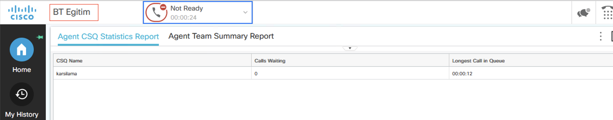

UCCXD - Deploying Cisco Unified Contact Center Express
Introduction to UCCX

Features
- (ACD) Automatic Call Distribution : Route calls, skills based route call
-
IVR Interactive voice responder : Interact with customer. Customer manage IVR with pressing button.
1 for Sales, 2 for Human Resource, 3 for Information
-
DB Information : UCCX interract with DB and pull information about customer and agent response to customer with this information.
There are four types of Contact Center ,
Unified Contact Center Express : 400 Agent
Packaged Contact Center Enterprise : 12000 Agent
Unified Contact Center Enterprise : 24000 Agent
Webex Contact Center : Cloud Based Contact Center.
UCCX Terminology
Computer Telephony Integration (CTI) :
CTI Route Points : When you create Application on UCCX, CTI route point created automatically

Call Control Group : CCG is a group of concurrent port which is configure by manually.


CTI Ports : When you configure Call Control Group, UCCX create CTI PORTS on Cucm due to API access.
Contact Service Queue (CSQ) : CSQ represents agent group.

JTAPI Application User : JTAPI user manage CTI ports and CTI route point
RmCm Application User : Resource manager is about Agent - Contact manager is about queue
Resource : Agents who can be used on CSQ etc
Skills : Used for speciality like language or expret level etc
Resource Group : RG used for grouping the agents. After creation you can assign agent to RG.

Teams : Used for supervisors. Supervisors responsible the agents. Agents who belong to Team, managed by same supervisor.

UCCX Call Flow

1 Step - CUBE accept call from ITSP.
2 Step - Call distribute from CUBErouter with dial-peer to CUCM.
3 Step - There is a CTI route point on CUCM, call goes to CC from CTI route point over CTI ports.
4 Step - Contact Center accept call from trigger number and distribute to agent that you configure.
Automatic Call Distribution (ACD)
Resource groups are a static group of agents that can be assigned to one or more queues.
Skills based routing can be configured to require an agent to be assigned one or more skills, and at a minimum level, before calls can be routed to them, and route the calls to agents based on the skill level assigned to them. Queues can be configured to route based on a number of functions based on the agent’s skill level, high to low, low to high, and based on weighting.
In UCCX, skills are a simple text tag, and a skill level from 1 to 10. Agents can be assigned skills, and queues can be configured to require them.
Resource Group
Resource Group based queuing is much more like traditional hunt group routing, where a fixed group of resources (agents) is selected from. You lose flexibility compared to Skills Based routing, but gain some simplicity.
Longest Idle the person who has been off the phone the longest gets the next call
Linear Agent 1 always gets the call if the are available, if not, agent 2 gets the call. If neither are available, the call is delivered to agent 3, etc.
Circular Agent 1 gets a call, agent 2 gets the next one, and so on, unless the next scheduled agent is not available, when is skips to the next available agent in the ordered line.
Most Handled Contacts & Shortest Average Handle Time, (the system dynamically reorders the list based on efficiency metrics)

CUCM & UCCX Integration
- Step 1 - Create
Access Control Groupfor UCCX.
- Step 2 - Add
Standard AXL API Accessrole toACGwhich is created in Step 1.

- Step 3 - Create
Application Userwith thisAccess Control Group

- Step 4 - On UCCX GUI, fill the information about
CUCM

- Step 5 - This exception begun with version 12.5. You should upload
Tomcat Trustcertificate toUCCX tomcat trust store
- Step 6 - There are four
Tomcat Trustcertificate. Choose which belogs toCUCM.
- Step 7 - Download
Tomcat Trustcertificate as a .pem format, then upload it toUCCX. Then restartUCCXfrom cli withutils system restartcommand.

- Step 8 - Choose license type. For testing use
NFP(Not for production).
- Step 9 - You can change license type on this page otherwise click
nextto continue.
- Step 10 - waiting for activating license then click
next

- Step 11 - Click
next

- Step 12 - Enter
ctiandrmcmuser credential for managing agent and phones.

- Step 13 - Choose agent number then click
click

- Step 14 - Choose language then click
next
- Step 15 - Choose adminbetween users.

- Step 16 - Firstly you should assign extension as a
IPCCExtension.

- Step 17 - Now you will see user as a resource in UCCX
Subsystems / RmCm /Resources

- Step 18 - Now create skill and assign it
Subsystems / RmCm / Skilland add new

- Step 19 - Add
SkilltoResource

- Step 20 - Now assign supervisor capability
Wizard / RmCm Wizard / Add SupervisorBy default all users as agent capabilit. Then clickNext

- Step 21 - Step build
Contact Service Queuesthen clickNext
- Automatic wrap UP
-
Wrap up time
-
Step 22 - Choose
SkillandResource Selection Criteria
- Step 23 - Congratulations you created a CSQ.
- Step 24 - Lets configure
Call Control Group. Subsystems / Cisco Unified CM Telephony / Call Control Group then clickAdd.

- Step 25 - Check it on UCCX

and from CUCM site
UCCX Creating Script
For creating script, we need script editor. You can download it from uccx plugin page like below.

It is easy to install. a couple of next next

- There are four sites of
script editor.Script editor has drop-down machanism, you dont need to know any scripting language.
- example diagram
LABS
LAB 01 - Play prompt
Purpose:
Caller calls the trigger number, listen prompt and hang up line automatically. Use P_101.waw as a prompt.
Answer:

LAB 02 - Real Scenarios
Purpose:
Caller calls the trigger number then listen prompt, prompt says in turkish "BT Egitim'e hoşgeldiniz muhasebe için 1'e, insan kaynakları için 2'ye, satış için 3'e, teknik destek için 4'e basın". Test every option and its call routing. Use P_201.waw as a prompt. In order of options:
-
Muhasebe (1021)
-
Insan Kaynakları (1022)
-
Satış (1023)
-
Teknik Destek (1024)
Answer:
LAB 03 - Using SET in Script Editor
Purpose:
Use SET item for LAB-02 scenario. In timeout listen greeting prompt again and again.
Answer:

LAB 04 - Multi-Language Usage
Purpose:
Use English as a second language in same scenario.
Answer:
LAB 05 - Calendar Usage in UCCX Script
Purpose:
Use calendar in script for arranging propt and listen off business hours prompt to caller.
Answer:
First of all, you should arrange business hours / non-business hours on UCCX GUI Calendar Management.

Is there any special days cnofigure them on schedule Custom Business Days line below

In third step, you can schedule holidays,

PS : Earlies version of 12.X you shoud use Day of week and time of day.
LAB 06 - Get digit String
Purpose:
In addition to previous labs, If caller know the extensions, call is redirected the Auto Attendant.
Answer:
We should use switch and get digit String in this scenarios

LAB 07 - CSQ Usage
Purpose:
Configure CSQ on uccx then set this CSQ on script.
Answer:
LAB 08 Usage of Increment
Purpose:
If you want to do something exact times you can use increment for counting and if for conditional routing.
Answer:

LAB 09 Position of Queue
Purpose:
Configure script and say caller that the Position of the queue with dynamically.
Answer:
Use Get Reporting Statistic for getting position, then use it in prompt.
LAB 10 Estimated Wait Time
Puspose:
In LAB 09 add estimated wait time to script. Caller lissten estimated wait time. Maybe he/she will wait maybe not.
Answer:

PS: If there is no enough data for calculating estimated wait time, script output will -1. Thats mean not an error.
Database Integration
UCCX can be READ / WRITE to external database. For this procedure, UCCX database subsystem should be runing that is under ccx engine.

and your license must be Premium

You should check which database or which version is sutiple for your UCCX version. For example for uccx 12.5.1 compatibility documantation is UCCX 12.5 Compatibility
In this document
In this course we use MS SQL. We need also jbdc driver for connection can be download this page. Use newer version and dowsload jtds-x.x.x-dist file. That is zip file extract it then use.
add driver to uccx


then add SQL server as a database source

{kind=link}
{kind=link}
{kind=link}
{kind=link}
{kind=link}
{kind=link}
{kind=link}
{kind=link}
{kind=link}
{kind=link}
{kind=link}
{kind=link}
{kind=link}
{kind=link}
{kind=link}
{kind=link}
{kind=link}
{kind=link}
{kind=link}
{kind=link}
{kind=link}
{kind=link}
{kind=link}
{kind=link}
{kind=link}
{kind=link}
{kind=link}
we should see Successful Test Connection like below

## LAB - Database Integration
Purpose:
Set script on script editor. When customer input their customer number, script check customer number on database then return to script customer name surname, customer number and their support is gold or not. At the same time if customer has gold support, agents will deal this customer as soon as possible.
Answer:
first of all use DB Read with this configuration

Field Selection is the most impotant part of this
{kind=link}
Next step is DB Get. In this stage we will pair the values

If b_gold is True, set Priority higher then default

and then close connection with DB Release

At the same time. We will display this values to agent finesse screen with Set Enterprise Call Info like below.

Finess Desktop
Cisco Finesse is a web-based application and user interface framework developed by Cisco Systems. It is designed to provide a comprehensive agent and supervisor desktop for contact center environments. Finesse enables agents and supervisors to handle customer interactions across various communication channels, such as voice calls, email, web chat, and social media, all from a single interface.
Key features of Cisco Finesse include
Multi-channel support: Finesse allows agents to manage customer interactions from different channels, ensuring a consistent experience across various communication mediums.
Call control: Agents can handle inbound and outbound voice calls using features like call transfer, hold, conference, and call recording.
Integrated agent desktop: Finesse provides a unified view of customer information, including their interaction history, allowing agents to deliver personalized and efficient service.
Collaboration tools: Finesse supports collaboration among agents and supervisors through features like chat, team messaging, and supervisor monitoring capabilities.
Customization and integration: Finesse can be customized and integrated with other applications to meet specific business needs. It provides APIs and development tools for building custom workflows and integrations.
Reporting and analytics: Finesse offers reporting and analytics capabilities to track contact center performance, monitor agent productivity, and gather insights for continuous improvement.
Finesse Desktop URL : https://
PS : Agent phone must add to RmCm Application User controled device.
{kind=link}
Finesse Administration
Disable chat
<!--
<headercolumn width="50px">
<component id="chat">
<url>/desktop/scripts/js/chat.component.js</url>
</component>
</headercolumn>
-->
{kind=link}
Add Title
You can edit the title with changing this parameter:
{kind=link}
Add Logo
For adding LOGO you need 3rd party gadget credential. Firtly you should reset this user with below command
UCCX with this user over winSCP and upload logo to directory. (jpeg,png)
{kind=link}
then, customize the XML file like below
Workflow
Firstly configure pop-up URL on workflow Finnesse Admin panel on UCCX.
{kind=link}
then, determine the condition for pop-up
{kind=link}
lastly add this flow to team
{kind=link}
Finnesse Supervisor Screen
Enable advanced capabilities on Finnesse Administrator screeen.
<!--
The following gadget provides Supervisor with advanced capabilities.
Using this gadget, supervisors can manage Queues, Prompts, Calendars, and so on.
Before including this gadget in Desktop Layout,
ensure that the advanced capability is enabled in Unified CCX Administration.
-->
<tab>
<id>ASCGadget</id>
<icon>admin</icon>
<label>finesse.container.tabs.supervisor.advancedcapabilities</label>
<columns>
<column>
<gadgets>
<gadget>https://localhost:8445/ascgadget/gadgets/ascgadget.xml</gadget>
</gadgets>
</column>
</columns>
</tab>
then give permission to Supervisor for manage prompt, application or calendar...
{kind=link}
CUIC (Reporting)
Troubleshoot of UCCX
some cli commands which help to troubleshoot: